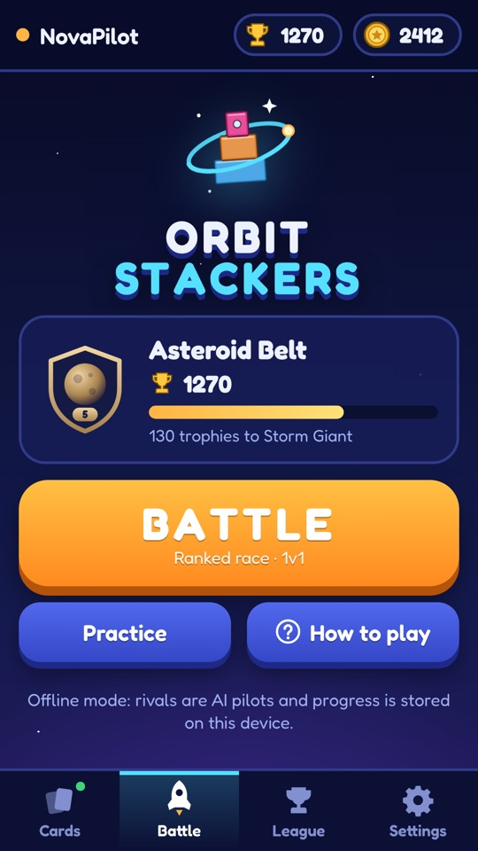
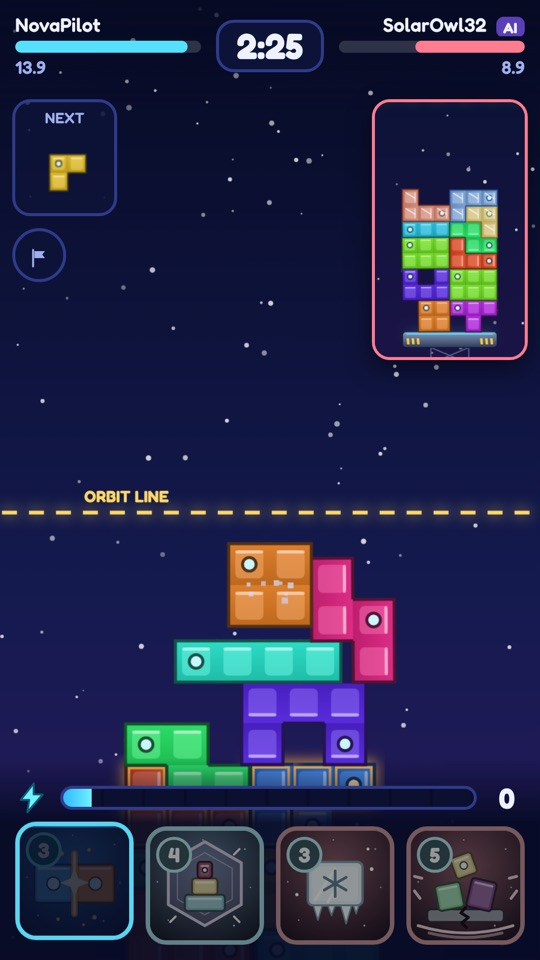
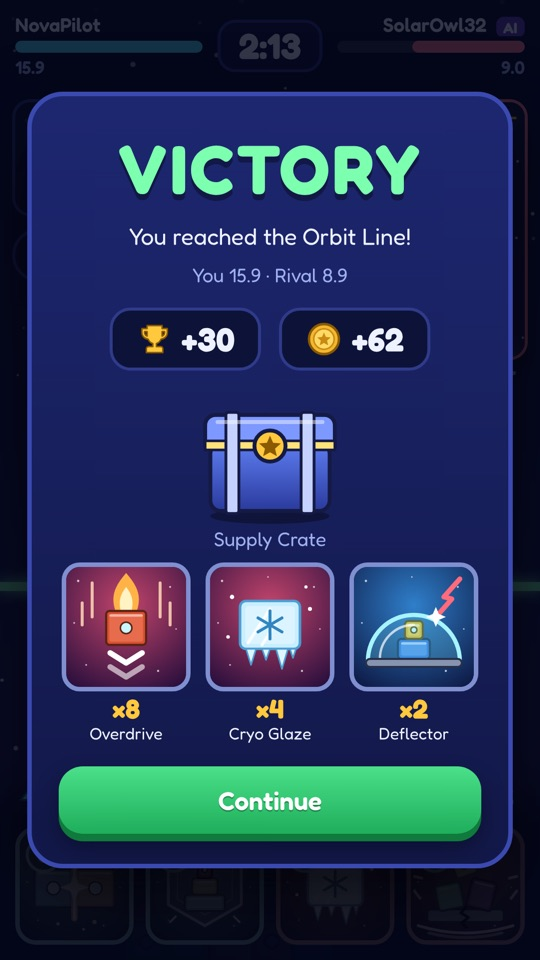

Orbit Stackers
Uzay modüllerini diz, rakibini alt et ve kuleni yörüngeye ilk sen ulaştır!
Google Play'de kapalı testte. Yakında.
Galaksinin en yüksek kulesini inşa et, rakibinden önce.
Orbit Stackers gerçek zamanlı bir fizik yarışı. İstasyon modülleri yukarıdan düşer: onları yönlendir, döndür ve fırlatma platformuna diz. Her parça yerçekimine uyar; tek bir dikkatsiz bırakış kulenin yarısını uzaya savurabilir. Yörünge Çizgisine ulaş ve uplink'in dolana kadar kuleni çizginin üstünde tut: zafer senin.
Kafa kafaya yarış
- Yaklaşık bir dakika süren hızlı 1'e 1 dereceli yarışlar
- İki pilot da aynı modülleri alır: sonucu beceri belirler
- Kendi kuleni kurarken rakibinin kulesini canlı izle
Kartlarını oyna
- Toplayıp geliştirebileceğin 13 güç kartı
- Bir saldırıyı engellemek için Saptırıcı'yı tam zamanında aç
- Tarzına uyan 4 kartlık donanımını kur
Liglerde yüksel
- Kupa kazan ve Fırlatma Rampası'ndan Derin Uzay'a kadar 10 ligde yüksel
- Dereceli yarışlarda sandık kazan, uçtukça aç
- Sıralamanın zirvesini hedefle
Kolay başla
- Yönlendirmek için sürükle, döndürmek için dokun, bırakmak için aşağı kaydır
- Antrenman modu ve yapay zekâ pilotlara karşı çevrimdışı oyun
- Türkçe, İngilizce, Almanca, İspanyolca, Fransızca ve Portekizce
Ekran görüntüleri





Yasal
Yasal metinler İngilizcedir.